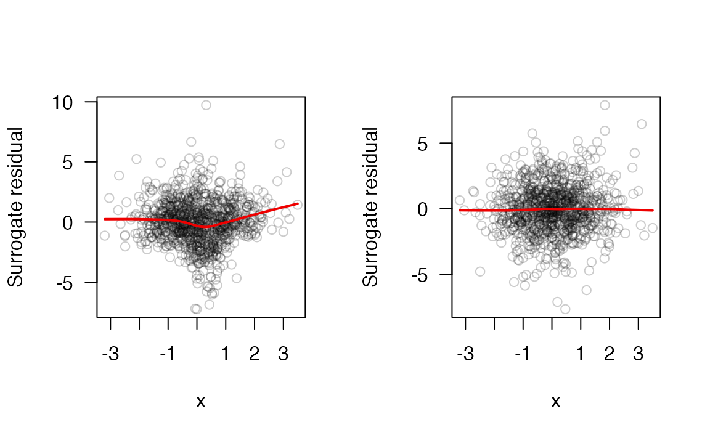
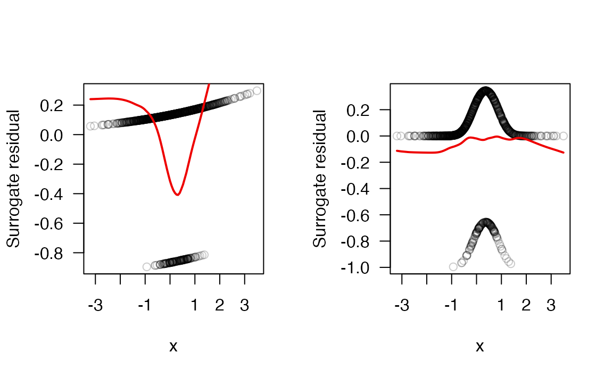
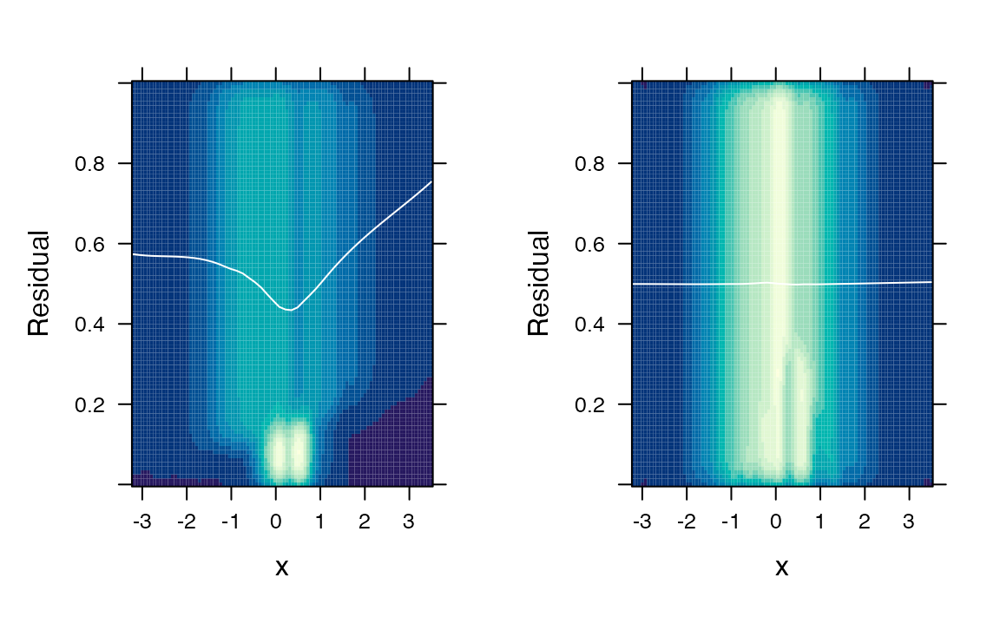
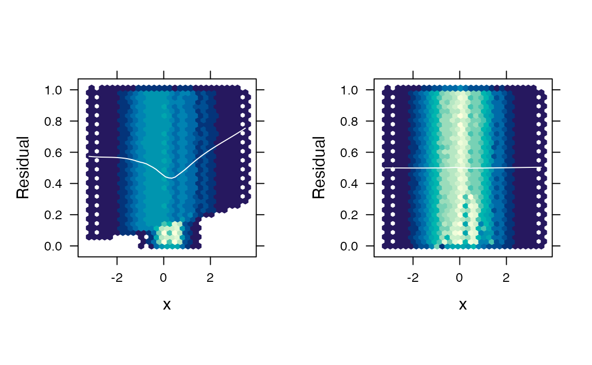
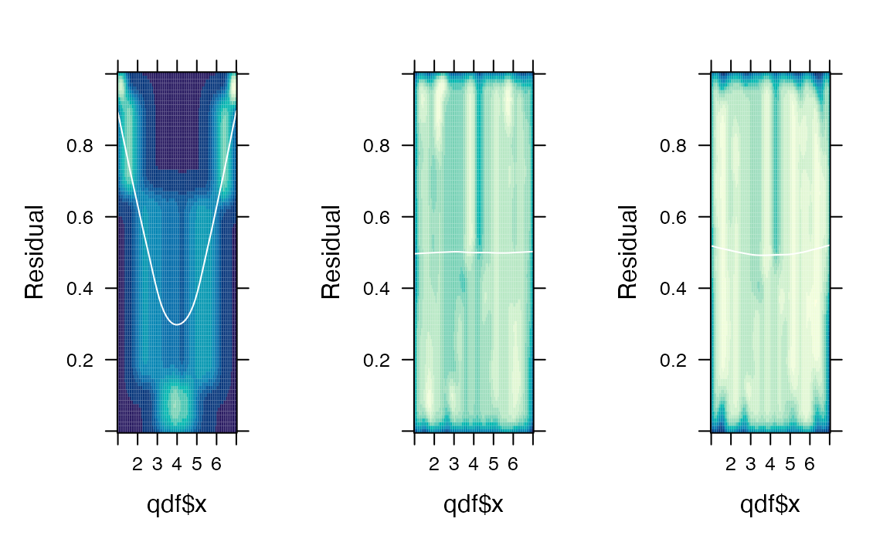

Computing and visualizing functional residuals with the funres package
intro.RmdCurrently supported models
| Model type | Family | Package | Function |
|---|---|---|---|
| GLM | Binomial | stats | glm() |
| GLM | Poisson | stats | glm() |
| GLM | Quasi-Poisson | stats | glm() |
| GAM | Binomial | mgcv | gam() |
| GAM | Poisson | mgcv | gam() |
| GAM | Quasi-Poisson | mgcv | gam() |
| Ordinal | NA | VGAM |
vgam() and vgam()
|
Logistic regression
We’ll start by generating data from a quadratic logistic regression (LR) model:
# Generate data from a logistic regression model with quadratic form
set.seed(1217)
n <- 1000
x <- rnorm(n)
# x[1] <- 10 # add an outlier
z <- 1 - 2*x + 3*x^2 + rlogis(n)
y <- ifelse(z > 0, 1, 0)
# Fit a couple of LR models
fit.bad <- glm(y ~ x, family = binomial) # wrong
fit.good <- glm(y ~ x + I(x^2), family = binomial) # right
#> Warning: glm.fit: fitted probabilities numerically 0 or 1 occurredFunctional residuals
fres.bad <- fresiduals(fit.bad)
fres.good <- fresiduals(fit.good)
par(mfrow = c(1, 2), las = 1)
plot(fres.bad[[1]], xlab = "t", ylab = "F(t)")
plot(fres.good[[1]], xlab = "t", ylab = "F(t)") # plot FRs for first observationDoes plotting them all tell us anything interesting?
plot(fres.bad[[1]], xlab = "t", ylab = "F(t)", las = 1, type = "n")
tt <- 0:100/100
for (i in seq_along(fres.bad)) {
lines(tt, fres.bad[[i]](tt), col = adjustcolor(1, alpha.f = 0.05))
}Surrogate and probability-scale residuals
sr.bad <- fresiduals(fit.bad, type = "surrogate")
sr.good <- fresiduals(fit.good, type = "surrogate")
par(mfrow = c(1, 2))
col <- adjustcolor(1, alpha.f = 0.2)
plot(x, y = sr.bad, col = col, las = 1, ylab = "Surrogate residual")
lines(lowess(x, y = sr.bad), lwd = 2, col = "red2")
plot(x, y = sr.good, col = col, las = 1, ylab = "Surrogate residual")
lines(lowess(x, y = sr.good), lwd = 2, col = "red2")
# Probability-scale residuals
ps.bad <- fresiduals(fit.bad, type = "probscale")
ps.good <- fresiduals(fit.good, type = "probscale")
par(mfrow = c(1, 2))
plot(x, y = ps.bad, col = col, las = 1, ylab = "Surrogate residual")
lines(lowess(x, y = sr.bad), lwd = 2, col = "red2")
plot(x, y = ps.good, col = col, las = 1, ylab = "Surrogate residual")
lines(lowess(x, y = sr.good), lwd = 2, col = "red2")
Functional residual density (FRED) plots
The FRED plots in R are based on the Trellis framework (e.g.,
lattice), which rely on grid graphics.
The gridExtra::grid.arrange() function is the most
convenient approach to arranging several plots here. These graphs are
quicker to produce compared to ggplot2.
# Two-dimensional kernel density estimation
gridExtra::grid.arrange(
fredplot(fit.bad, x = x),
fredplot(fit.good, x = x),
nrow = 1
)
# Hexagonal binning
gridExtra::grid.arrange(
fredplot(fit.bad, x = x, type = "hex", aspect = 1),
fredplot(fit.good, x = x, type = "hex", aspect = 1),
nrow = 1
)
Ordinal model example with VGAM package
library(VGAM)
#> Loading required package: stats4
#> Loading required package: splines
# Fit models to simulated ordinal response data
qdf <- sure::df1 # quadratic data from the sure package
fit1 <- vglm(y ~ x, data = qdf, family = acat(reverse = TRUE, parallel = TRUE))
fit2 <- vglm(y ~ poly(x, degree = 2), data = qdf, family = acat(reverse = TRUE, parallel = TRUE))
#> Warning in checkwz(wz, M = M, trace = trace, wzepsilon = control$wzepsilon): 1
#> diagonal elements of the working weights variable 'wz' have been replaced by
#> 1.819e-12
#> Warning in checkwz(wz, M = M, trace = trace, wzepsilon = control$wzepsilon): 6
#> diagonal elements of the working weights variable 'wz' have been replaced by
#> 1.819e-12
#> Warning in checkwz(wz, M = M, trace = trace, wzepsilon = control$wzepsilon): 6
#> diagonal elements of the working weights variable 'wz' have been replaced by
#> 1.819e-12
#> Warning in vglm.fitter(x = x, y = y, w = w, offset = offset, Xm2 = Xm2, : some
#> quantities such as z, residuals, SEs may be inaccurate due to convergence at a
#> half-step
fit3 <- vgam(y ~ s(x), data = qdf, family = acat(reverse = TRUE, parallel = TRUE))
#> Warning in vgam.fit(x = x, y = y, w = w, mf = mf, Xm2 = Xm2, Ym2 = Ym2, :
#> convergence not obtained in 30 IRLS iterations
# Residual plots
gridExtra::grid.arrange(
fredplot(fit1, x = qdf$x), # linear term (wrong)
fredplot(fit2, x = qdf$x), # quadratic term
fredplot(fit3, x = qdf$x), # smooth term
nrow = 1
)